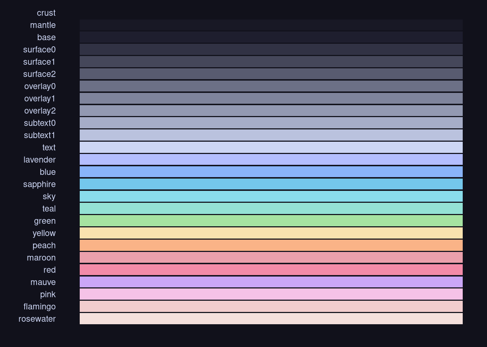
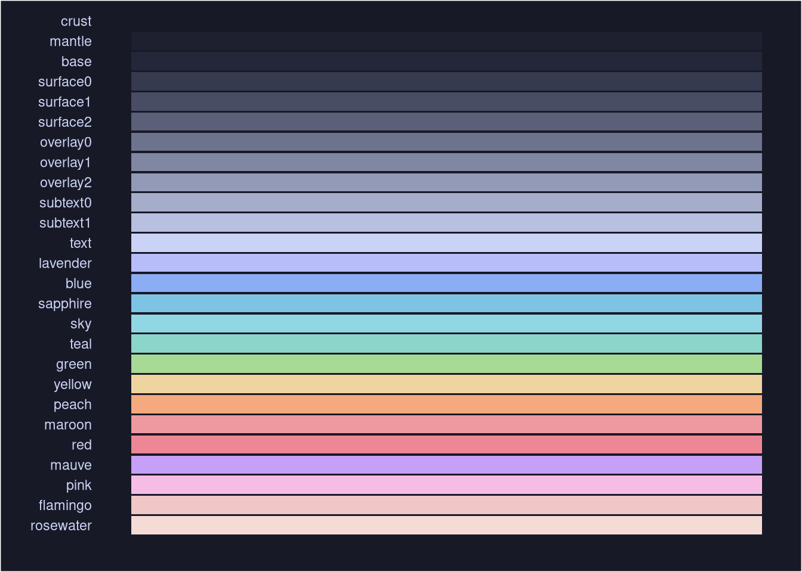
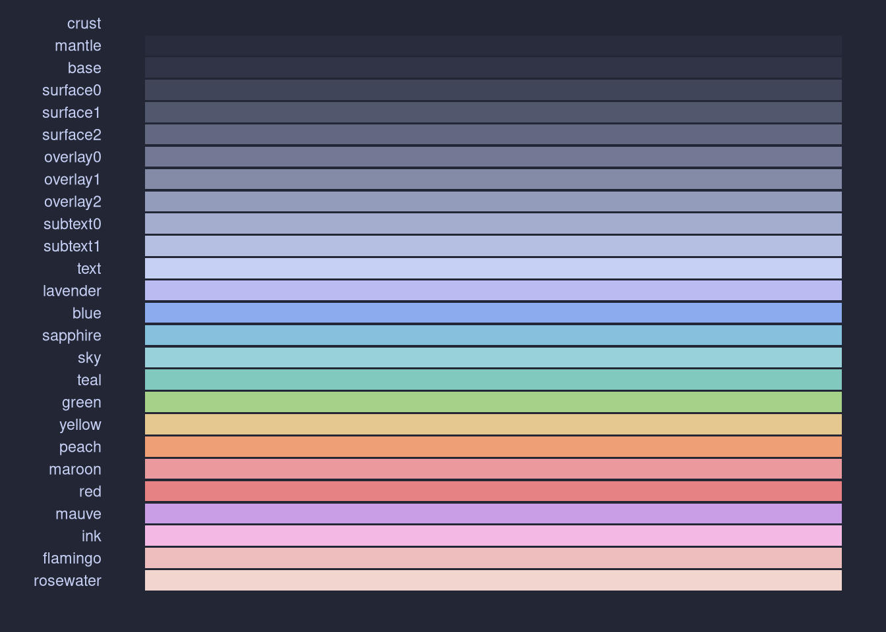
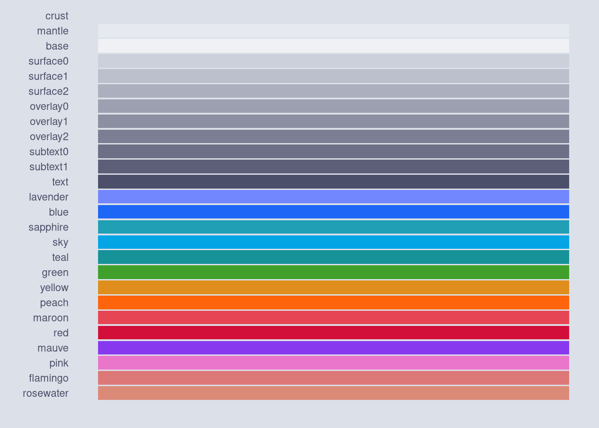
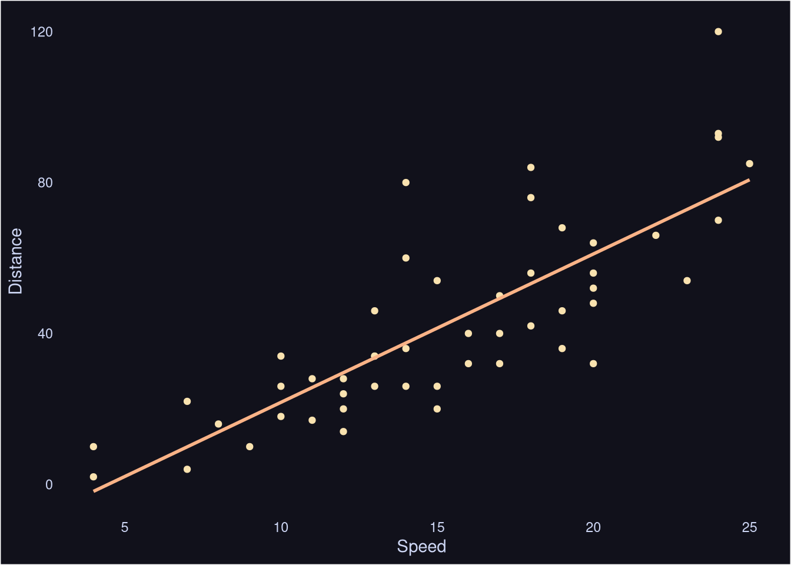
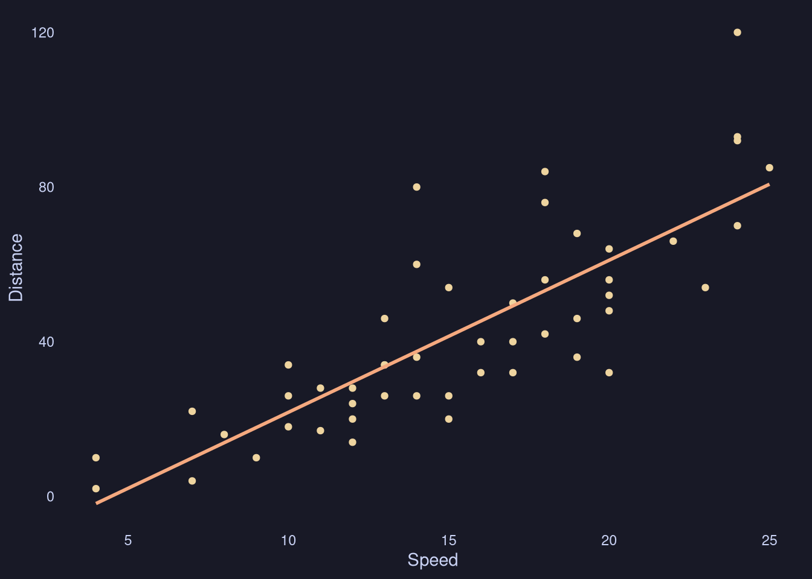
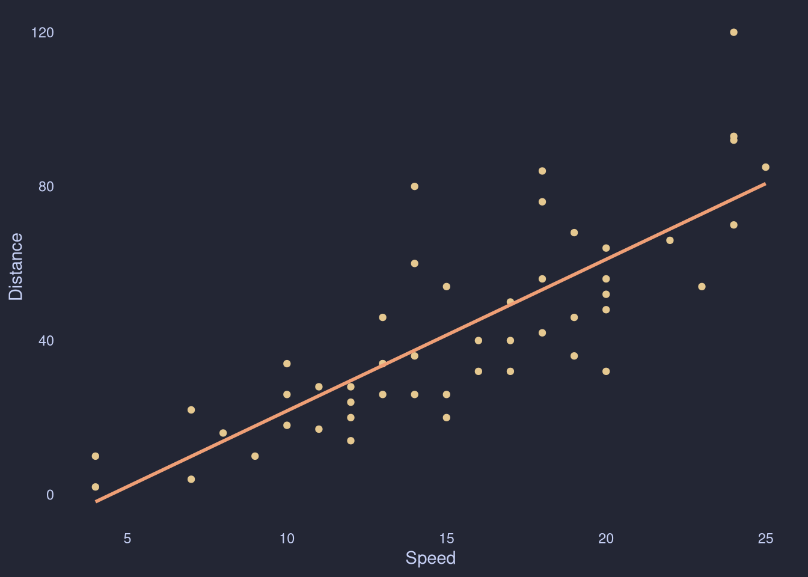

Introducing {ricethemes}
I’ve written a R package with popular desktop themes for {ggplot2}. The idea is that the package will enable analysts to explore data using their preferred desktop theme and have a coherent development enviorment. For now, I’ve added the Catppuccin theme with four flavors: latte, frappe, macchiato, and mocha. I plan on adding more themes in the future, depending on the demand.
I recommend using the pak package to install ricethemes.
pak::pkg_install("mackrics/ricethemes")For now, the package contains functions to obtain hex codes for the various colors, themes, and functions to display the colors.




The classic cars correlation plot looks something like this for the four flavors:




Any feedback or request is much appreciated, preferably as a GitHub issue in this repository